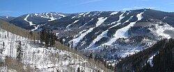

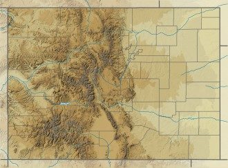

.jpg){kind=link}
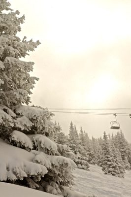

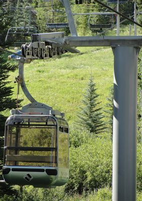
.jpg){kind=link}
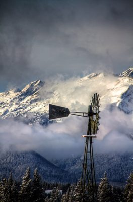
.jpg){kind=link}
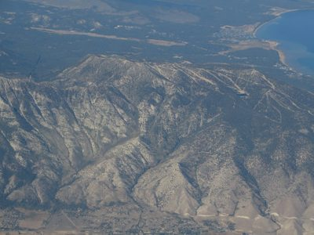

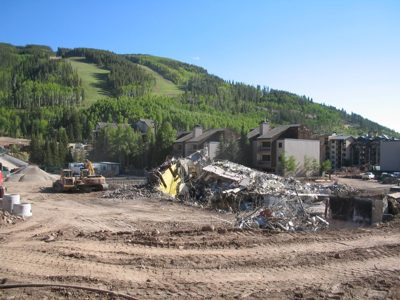

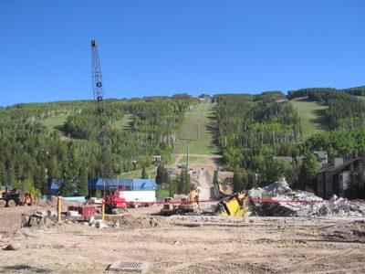
.jpg){kind=link}
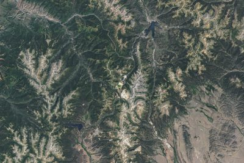
.jpg){kind=link}
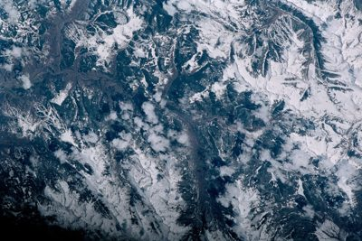

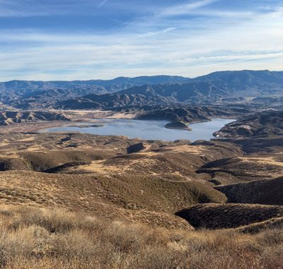

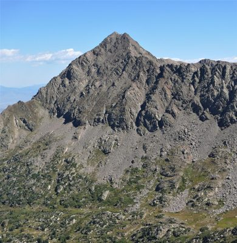
.jpg){kind=link}
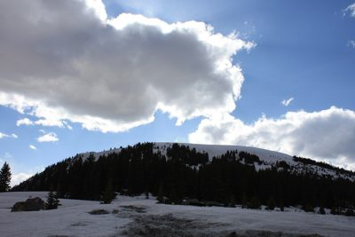

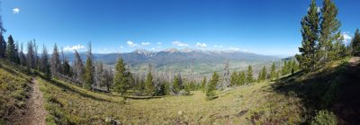

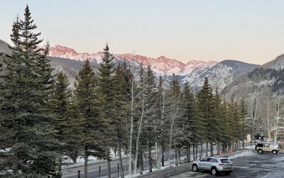

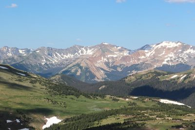

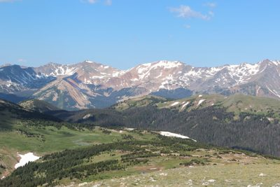
.jpg){kind=link}
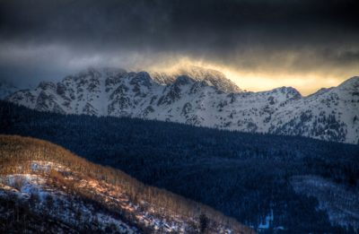

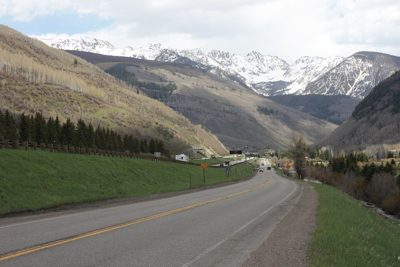

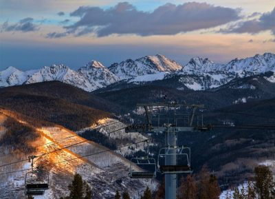

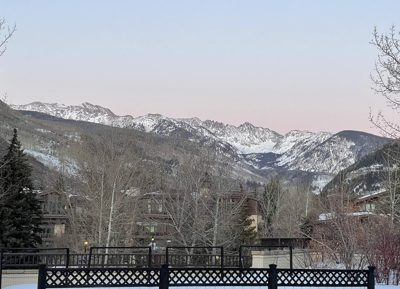

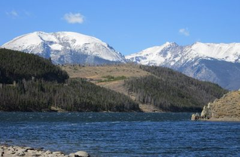
.JPG){kind=link}
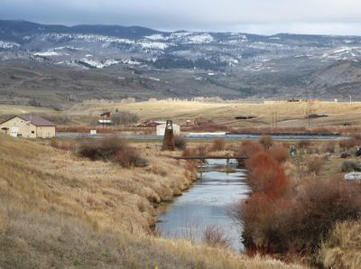

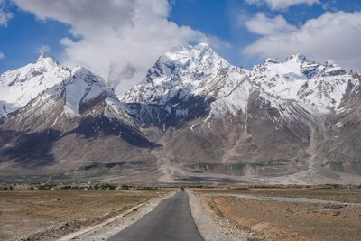
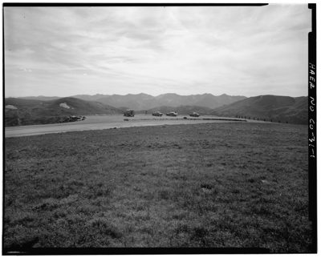

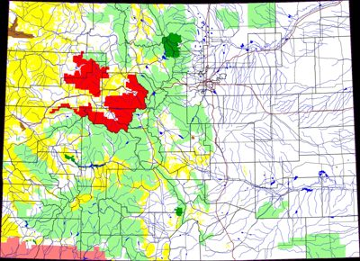

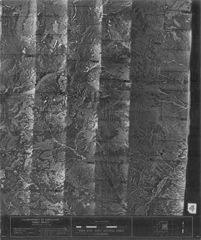

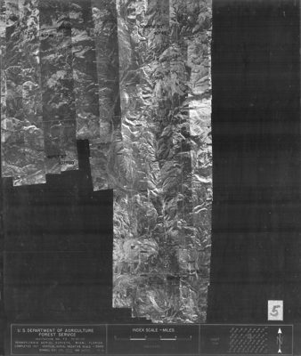

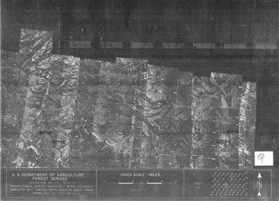

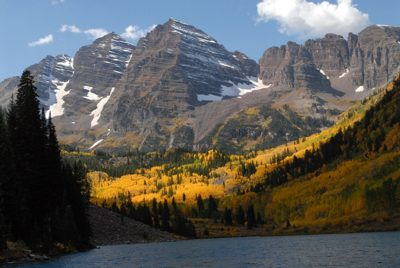

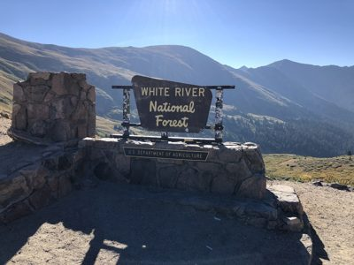

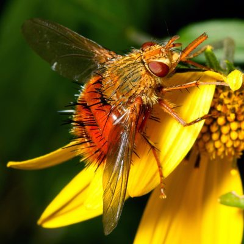
.jpg){kind=link}
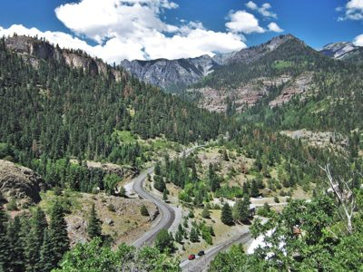
.jpg){kind=link}
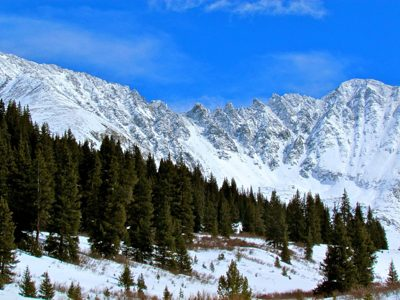
.jpg){kind=link}
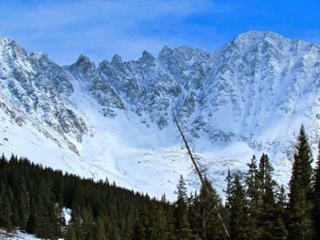
.jpg){kind=link}
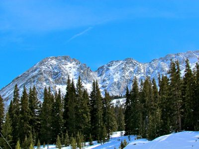
.jpg){kind=link}
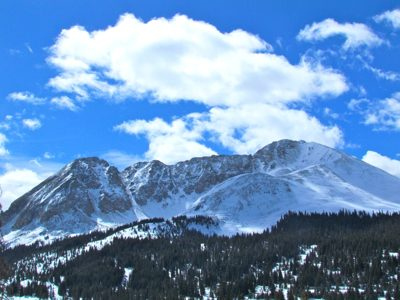
.jpg){kind=link}
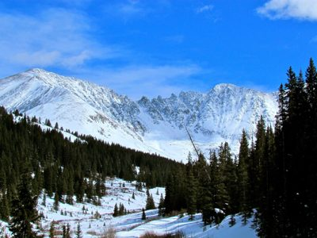
.jpg){kind=link}
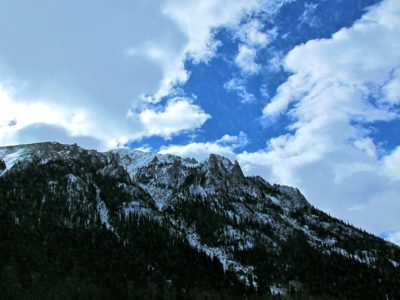
.jpg){kind=link}
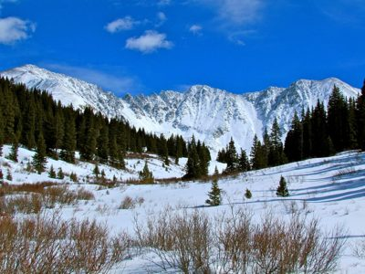

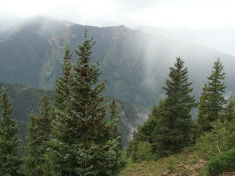

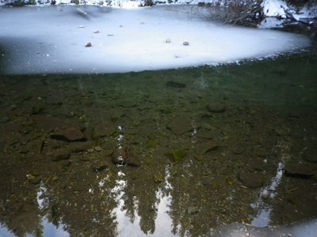
.jpg){kind=link}
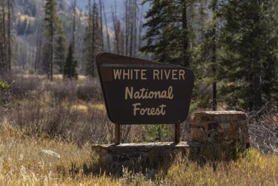

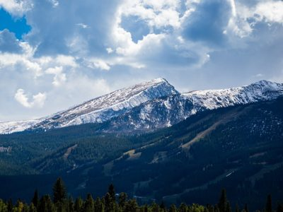

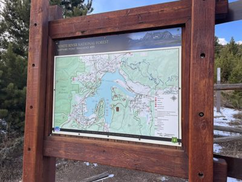

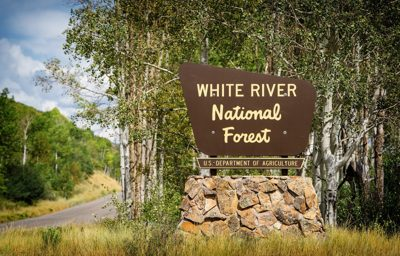
ski-vail — research
source: https://www.vail.com/ + https://en.wikipedia.org/wiki/Vail_Ski_Resort
title: Vail Ski Resort - Wikipedia

fonts: n/a
css hexes: #000000(111), #ffffff(20), #a2a9b1(4), #f8f9fa(3), #dadaff(3), #c0c0ff(3), #fdfdfd(3), #1f1f23(2), #b32424(2), #ffd2a5(2), #ff9b37(2), #ff7800(2)
headings
- Contents
- Vail Ski Resort
- History
- White River National Forest
- Forest Service feasibility studies
- Forest plans
- Topography and configuration
- Climate
- References
- Further reading
- External links
copy
Vail Ski Resort - Wikipedia Jump to content Main menu Main menu move to sidebar hide Navigation Main page Contents Current events Random article About Wikipedia Contact us Contribute Help Learn to edit Community portal Recent changes Upload file Special pages Search Search Appearance Donate Create account Log in Personal tools Donate Create account Log in Contents move to sidebar hide (Top) 1 History Toggle History subsection 1.1 1960s 1.2 1970s 1.3 1990s 1.4 2000s 1.5 2010s 1.6 2020s 2 White River National Forest 3 Forest Service feasibility studies 4 Forest plans 5 Topography and configuration Toggle Topography and configuration subsection 5.1 Elevation 5.2 Slope aspects 5.3 Trails 5.4 Lifts 6 Climate 7 References 8 Further reading 9 External links Toggle the table of contents Vail Ski Resort 3 languages مصرى Español Svenska Edit links Article Talk English Read Edit View history Tools Tools move to sidebar hide Actions Read Edit View history General What links here Related changes Upload file Permanent link Page information Cite this page Get shortened URL Switch to legacy parser Print/export Download as PDF Printable version In other projects Wikimedia Commons Wikidata item Appearance move to sidebar hide Coordinates : 39°38′20″N 106°22′26″W / 39.639°N 106.374°W / 39.639; -106.374 From Wikipedia, the free encyclopedia Ski resort in Vail, Colorado, US "},"location":{"wt":"[[Vail, Colorado|Vail]], [[Eagle County, Colorado|Eagle County]],<br>[[Colorado]], United States"},"nearest_city":{"wt":"[[Denver]] – {{convert|100|mi}}<br>{{spaces|16}}(via [[Interstate 70 in Colorado|Interstate 70]])"},"pushpin_map":{"wt":"Colorado#United States"},"pushpin_relief":{"wt":"1"},"coordinates":{"wt":"{{coord|39.639|-106.374|type:landmark_region:US-CO|display=inline,title}}"},"pushpin_label_position":{"wt":""},"pushpin_caption":{"wt":"Location in [[Colorado]]##Location in the United States"},"status":{"wt":"Operating"},"owner":{"wt":"[[Vail Resorts]]"},"vertical":{"wt":"{{spaces|2}}{{convert|3450|ft|0|abbr=on}}"},"top_elevation":{"wt":"{{convert|11570|ft|0|abbr=on}}"},"base_elevation":{"wt":"{{spaces|2}}{{convert|8120|ft|0|abbr=on}}"},"skiable_area":{"wt":"{{convert|5317|acre|mi2 km2|1}}"},"number_trails":{"wt":"195 total<br>[[File:Ski trail rating symbol-green circle.svg|13px]] 18% beginner<br>[[File:Ski trail rating symbol-blue square.svg|13px]] 29% intermediate<br>[[File:Ski trail rating symbol-black diamond.svg|13px]] 53% advanced"},"longest_run":{"wt":"''Riva Ridge'' – {{convert|4|mi|round=0.5}}"},"lift_system":{"wt":"31 total (2 [[Gondola lift|gondolas]] (12 and 10 person), 4 [[Detachable chairlift|high speed]] six's, 14 high speed quads, 1 fixed grip quad, 2 fixed grip triples, 9 [[surface lift]]s)"},"lift_capacity":{"wt":"<!-- passengers/hr -->"},"terrain_parks":{"wt":"Yes, 2, 1 Super-Pipe"},"snowfall":{"wt":"{{convert|354|in|ft m|abbr=on}}"},"snowmaking":{"wt":"Yes"},"night_skiing":{"wt":"No"},"website":{"wt":"[http://www.vail.com/ vail.com]"}},"i":0}}]}'> Vail Ski Resort Front side of Vail Resort in 2005 Vail Ski Resort Location in Colorado Show map of Colorado Vail Ski Resort Location in the United States Show map of the United States Location Vail , Eagle County , Colorado , United States Nearest city Denver – 100 miles (160 km) (via Interstate 70 ) Coordinates 39°38′20″N 106°22′26″W / 39.639°N 106.374°W / 39.639; -106.374 [[Geographic coordinate system|Coordinates]]: {{#parsoid\u0000fra
refs kept (people-screened)
- 00.jpg: This is the logo for the cryptocurrency and blockchain platform 'Naruto' which features a stylized blue design. | logo=True | palette ['#000000', '#006cd1', '#010000', '#016fd6', '#043465']
- 08.jpg: A wide-angle view of snow-covered mountains with ski runs and forested areas under a clear blue sky. | logo=False | palette ['#575f6c', '#2a323e', '#94b4dd', '#7e92ac', '#c4d2e3']
- 09.jpg: This is a topographic map showing terrain features and waterways in a region with grid lines for geographic reference. | logo=False | palette ['#af9a69', '#8e784e', '#c2b587', '#cfc69c', '#dbd5ad']
- 10.jpg: This is a topographic map of the United States showing geographical features like mountains and rivers. | logo=False | palette ['#b5c5a2', '#ddd9ae', '#8aafbf', '#e3e9cd', '#c2d9c9']
- commons05.jpg: A snowy landscape with snow-covered trees and a ski lift cable running across the scene. | logo=False | palette ['#b2a897', '#746a59', '#f7efdb', '#ffffff', '#fffef4'] | SOURCE commons: Back Bowl (4268045420).jpg — Zach Dischner · Wikimedia Commons · CC-BY https://commons.wikimedia.org/wiki/File:Back_Bowl_(4268045420).jpg
- commons12.jpg: A gondola lift with the Vail logo is shown against a backdrop of green grass and trees. | logo=True | palette ['#596255', '#33392e', '#7e8761', '#a6b26c', '#c2ce81'] | SOURCE commons: Gondola Vail Colorado.JPG — Greg Tally - User: (WT-shared) WineCountryInn at wts wikivoyage · Wikimedia Commons · CC-BY-SA https://commons.wikimedia.org/wiki/File:Gondola_Vail_Colorado.JPG
- commons24.jpg: A weathered windmill stands in the foreground against a backdrop of snow-covered mountains partially obscured by clouds. | logo=False | palette ['#7b7f8a', '#525967', '#232832', '#9798a2', '#cdc5ba'] | SOURCE commons: Blue Sky Windmill (6824806724).jpg — Zach Dischner · Wikimedia Commons · CC-BY https://commons.wikimedia.org/wiki/File:Blue_Sky_Windmill_(6824806724).jpg
- commons25.jpg: An aerial view of rugged mountains with sparse vegetation and a coastline in the distance. | logo=False | palette ['#5b6c7c', '#667583', '#4e6174', '#767d85', '#8e8a86'] | SOURCE commons: Heavenly Mountain Resort, Lake Tahoe, Nevada (21581093841).jpg — Ken Lund from Reno, Nevada, USA · Wikimedia Commons · CC-BY-SA https://commons.wikimedia.org/wiki/File:Heavenly_Mountain_Resort,_Lake_Tahoe,_Nevada_(21581093841).jpg
- commons35.jpg: A construction site with debris and heavy machinery surrounded by forested mountains and residential buildings. | logo=False | palette ['#b1d1ef', '#9d9c9e', '#42453f', '#5f6b53', '#84756b'] | SOURCE commons: Old Gondola Building remains.jpg — No machine-readable author provided. Dbenbenn assumed (based on copyright claims · Wikimedia Commons · CC-BY-SA https://commons.wikimedia.org/wiki/File:Old_Gondola_Building_remains.jpg
- commons36.jpg: A construction site with heavy machinery and debris on a hillside surrounded by forests under a clear blue sky. | logo=False | palette ['#6f97cd', '#4a4f42', '#cdc0b8', '#677f91', '#8aa8d5'] | SOURCE commons: Old Gondola Building remains 2.jpg — No machine-readable author provided. Dbenbenn assumed (based on copyright claims · Wikimedia Commons · CC-BY-SA https://commons.wikimedia.org/wiki/File:Old_Gondola_Building_remains_2.jpg
- commons40.jpg: This is a satellite image showing a mountainous region with valleys, rivers, and man-made structures like roads and possibly mining operations. | logo=False | palette ['#444f4a', '#354240', '#5d635a', '#7c7a6e', '#989184'] | SOURCE commons: The Making of Ski Troopers at Camp Hale (154146 - cocamphale oli 20240729 lrg).jpg — NASA Earth Observatory images by Michala Garrison, using Landsat data from the U · Wikimedia Commons · PUBLIC-DOMAIN https://commons.wikimedia.org/wiki/File:The_Making_of_Ski_Troopers_at_Camp_Hale_(154146_-_cocamphale_oli_20240729_lrg).jpg
- ski03.jpg: This is an aerial view of snow-covered mountains and valleys from space, with clouds scattered across the landscape. | logo=False | palette ['#3d5669', '#152e40', '#6e7c8b', '#9ea4b1', '#c6c6d1'] | SOURCE ski: Vail, Colorado (1532).jpg — Image STS100-349-9 was provided by the Earth Sciences and Image Analysis Laborat · ski · public-domain https://commons.wikimedia.org/wiki/File:Vail,_Colorado_(1532).jpg
- ski04.jpg: A wide-angle view of a lake surrounded by rugged, dry hills and distant mountains under a partly cloudy sky. | logo=False | palette ['#826851', '#b7cbdf', '#474040', '#82858e', '#5c626e'] | SOURCE ski: Vail Lake and Palomar Mountain as seen from Oak Mountain.jpg — Z3lvs · ski · cc0 https://commons.wikimedia.org/wiki/File:Vail_Lake_and_Palomar_Mountain_as_seen_from_Oak_Mountain.jpg
- ski07.jpg: A rugged mountain peak with steep rocky slopes and sparse vegetation under a clear blue sky. | logo=False | palette ['#93c7f5', '#484c49', '#85847f', '#646459', '#716e61'] | SOURCE ski: Eagles Nest, Colorado.jpg — Jeremiah LaRocco · ski · cc-by-sa https://commons.wikimedia.org/wiki/File:Eagles_Nest,_Colorado.jpg
- ski08.jpg: A snow-covered mountain with dense forests under a sky filled with large clouds. | logo=False | palette ['#8d9cb4', '#677693', '#1a1a1c', '#a8bfdd', '#e3e9f0'] | SOURCE ski: Fremont Pass (Colorado).jpg — David Herrera from Albuquerque, NM, Bernalillo · ski · cc-by https://commons.wikimedia.org/wiki/File:Fremont_Pass_(Colorado).jpg
- ski09.jpg: A panoramic view of a mountainous landscape with forests and valleys under a clear blue sky. | logo=False | palette ['#37372c', '#718d9a', '#596e76', '#80a7b9', '#94caf1'] | SOURCE ski: Gore Range, Colorado.jpg — Mcphail492 · ski · cc-by-sa https://commons.wikimedia.org/wiki/File:Gore_Range,_Colorado.jpg
- ski10.jpg: A snowy mountain landscape with evergreen trees and parked cars along a road during sunset. | logo=False | palette ['#5b5b55', '#35362e', '#e1dfda', '#9e9a99', '#d6dfe4'] | SOURCE ski: Gore Range.JPG — Jeffrey Beall · ski · cc-by https://commons.wikimedia.org/wiki/File:Gore_Range.JPG
- ski11.jpg: A breathtaking view of snow-capped mountains and lush green valleys under a clear blue sky. | logo=False | palette ['#94c6ea', '#41463f', '#747867', '#9ab5cf', '#b5cee1'] | SOURCE ski: Gore Range Overlook, RMNP, July 2016.jpg — Thomson200 · ski · cc0 https://commons.wikimedia.org/wiki/File:Gore_Range_Overlook,_RMNP,_July_2016.jpg
- ski12.jpg: A breathtaking view of snow-capped mountains rising above lush green valleys and dense forests under a clear blue sky. | logo=False | palette ['#90c6f1', '#4d534f', '#818475', '#98b4ca', '#b4cfe6'] | SOURCE ski: Gore Range Overlook - panoramio.jpg — Thomson M · ski · cc-by https://commons.wikimedia.org/wiki/File:Gore_Range_Overlook_-_panoramio.jpg
- ski13.jpg: A dramatic landscape of snow-covered mountains under a dark, stormy sky with sunlight breaking through the clouds. | logo=False | palette ['#434651', '#091527', '#828181', '#272c38', '#0f243f'] | SOURCE ski: Gore Range Sunrise (6822005770).jpg — Zach Dischner · ski · cc-by https://commons.wikimedia.org/wiki/File:Gore_Range_Sunrise_(6822005770).jpg
- ski14.jpg: A winding road cuts through a valley surrounded by snow-capped mountains and forested slopes under a cloudy sky. | logo=False | palette ['#868079', '#3b402f', '#64645c', '#f3f5f8', '#cfd4d8'] | SOURCE ski: Gore Range from Vail, Colorado.jpg — David Herrera from Albuquerque, NM, Bernalillo · ski · cc-by https://commons.wikimedia.org/wiki/File:Gore_Range_from_Vail,_Colorado.jpg
- ski16.jpg: A ski lift stretches across a mountainous landscape at sunset, with snow-covered peaks and forests illuminated by the fading light. | logo=False | palette ['#6b758b', '#171d29', '#a3a1a6', '#252f3e', '#4a454b'] | SOURCE ski: Gore Range from south.jpg — Zach Dischner · ski · cc-by https://commons.wikimedia.org/wiki/File:Gore_Range_from_south.jpg
- ski17.jpg: A snowy mountain landscape with trees and buildings in the foreground during twilight. | logo=False | palette ['#6f6e6c', '#d2d7e1', '#424140', '#c8d6e9', '#c1c1c7'] | SOURCE ski: Gore Range magic hour.jpg — Jeffrey Beall · ski · cc-by https://commons.wikimedia.org/wiki/File:Gore_Range_magic_hour.jpg
- ski20.jpg: A serene landscape featuring a lake surrounded by forested hills and snow-capped mountains under a clear blue sky. | logo=False | palette ['#3f546d', '#7cafec', '#2c353a', '#7690b4', '#bacee5'] | SOURCE ski: Lake Dillon, in Colorado, in October 2011.jpg — Hogs555 · ski · cc-by-sa https://commons.wikimedia.org/wiki/File:Lake_Dillon,_in_Colorado,_in_October_2011.jpg
- ski22.jpg: A river flows through a rural landscape with dry grasses and distant snow-dusted mountains under an overcast sky. | logo=False | palette ['#7d756c', '#938c82', '#614f44', '#a5a6a5', '#cbd2d9'] | SOURCE ski: Muddy Creek (Colorado).JPG — Jeffrey Beall · ski · cc-by https://commons.wikimedia.org/wiki/File:Muddy_Creek_(Colorado).JPG
- ski23.jpg: A road stretches toward snow-capped mountains under a partly cloudy sky. | logo=False | palette ['#6a6b74', '#575356', '#848794', '#a7aab9', '#c8c8d1'] | SOURCE ski: Road Padum Zanskar Range Jun24 A7CR 00818.jpg — This Photo was taken by Timothy A. Gonsalves. Feel free to use my photos, but p · ski · cc-by-sa https://commons.wikimedia.org/wiki/File:Road_Padum_Zanskar_Range_Jun24_A7CR_00818.jpg
- ski24.jpg: A black and white photograph showing a winding road through a mountainous landscape with several vintage cars parked along the roadside. | logo=False | palette ['#4b4b4b', '#dadada', '#2a2a2a', '#eeeeee', '#949494'] | SOURCE ski: TRAIL RIDGE ROAD, GORE RANGE OVERLOOK, FACING SOUTHWEST. - Trail Ridge Road, Between Estes Park and Grand Lake, Estes Park, Larimer County, CO HAER COLO,35-ESPK.V,7-1.tif — https://www.loc.gov/pictures/item/co0193.photos.047753p · ski · public-domain https://commons.wikimedia.org/wiki/File:TRAIL_RIDGE_ROAD,_GORE_RANGE_OVERLOOK,_FACING_SOUTHWEST._-_Trail_Ridge_Road,_Between_Estes_Park_and_Grand_Lake,_Estes_Park,_Larimer_County,_CO_HAER_COLO,35-ESPK.V,7-1.tif
- ski25.jpg: This image displays a weather map showing precipitation levels across a region with color-coded intensity. | logo=False | palette ['#fafafd', '#c6f0af', '#cadfb7', '#a18778', '#f7f7a2'] | SOURCE ski: White River National Forest location in Colorado.png — Wikimedia Commons · ski · public-domain https://commons.wikimedia.org/wiki/File:White_River_National_Forest_location_in_Colorado.png
- ski26.jpg: This is an aerial photograph of the White River-Routt National Forest in Colorado, showing topographic details and county boundaries. | logo=False | palette ['#4b4b4b', '#575757', '#393939', '#646464', '#7f7f7f'] | SOURCE ski: 1964 Indexes to Aerial Photography for White River National Forest, Sheet 4 - DPLA - 23f7326416ce69410e88483df1aa360d.jpg — Department of Agriculture. Forest Service. 7/1/1905 · ski · public-domain https://commons.wikimedia.org/wiki/File:1964_Indexes_to_Aerial_Photography_for_White_River_National_Forest,_Sheet_4_-_DPLA_-_23f7326416ce69410e88483df1aa360d.jpg
- ski27.jpg: This is a black and white aerial map produced by the U.S. Department of Agriculture Forest Service showing topographical details of a mountainous region in Colorado. | logo=False | palette ['#575757', '#828282', '#323232', '#2b2b2b', '#3c3c3c'] | SOURCE ski: 1966 Indexes to Aerial Photography for White River National Forest, Sheet 5 - DPLA - 2c72fff53663b8cbc6d95fa48c66ed1e.jpg — Department of Agriculture. Forest Service. 7/1/1905 · ski · public-domain https://commons.wikimedia.org/wiki/File:1966_Indexes_to_Aerial_Photography_for_White_River_National_Forest,_Sheet_5_-_DPLA_-_2c72fff53663b8cbc6d95fa48c66ed1e.jpg
- ski28.jpg: This is an aerial map produced by the U.S. Department of Agriculture Forest Service showing geographic data for Colorado. | logo=False | palette ['#3d3d3d', '#6a6a6a', '#767676', '#585858', '#8f8f8f'] | SOURCE ski: 1966 Indexes to Aerial Photography for White River National Forest, Sheet 9 - DPLA - ff81af68a466d011815e803bbc0f1609.jpg — Department of Agriculture. Forest Service. 7/1/1905 · ski · public-domain https://commons.wikimedia.org/wiki/File:1966_Indexes_to_Aerial_Photography_for_White_River_National_Forest,_Sheet_9_-_DPLA_-_ff81af68a466d011815e803bbc0f1609.jpg
- ski29.jpg: A breathtaking view of snow-capped mountains with vibrant autumn foliage along the shoreline of a calm lake. | logo=False | palette ['#6e6862', '#18150f', '#48463b', '#a4b9d0', '#919088'] | SOURCE ski: 20111025-FS-SM-0002 - Flickr - USDAgov.jpg — U.S. Department of Agriculture · ski · public-domain https://commons.wikimedia.org/wiki/File:20111025-FS-SM-0002_-_Flickr_-_USDAgov.jpg
- ski30.jpg: A sign for White River National Forest stands at the edge of a mountainous landscape under a clear blue sky. | logo=False | palette ['#a5bcdf', '#758299', '#1d2534', '#2a303d', '#454b58'] | SOURCE ski: 2022-09-11 09 02 14 White River National Forest sign along U.S. Route 6 at Loveland Pass on the border of Summit County and Clear Creek County in Colorado.jpg — Famartin · ski · cc-by-sa https://commons.wikimedia.org/wiki/File:2022-09-11_09_02_14_White_River_National_Forest_sign_along_U.S._Route_6_at_Loveland_Pass_on_the_border_of_Summit_County_and_Clear_Creek_County_in_Colorado.jpg
- ski31.jpg: A close-up of a red and orange fly with prominent eyes and bristly hairs perched on a yellow flower. | logo=False | palette ['#906110', '#223504', '#e2c51d', '#101f03', '#6b3208'] | SOURCE ski: Adejeania vexatrix.jpg — Bruce Marlin · ski · cc-by https://commons.wikimedia.org/wiki/File:Adejeania_vexatrix.jpg
- ski32.jpg: A winding road cuts through a dense forested valley surrounded by towering mountains under a partly cloudy sky. | logo=False | palette ['#546354', '#3d473f', '#647c7b', '#8f998a', '#d5dadc'] | SOURCE ski: Colorado 033 (2).jpg — Jjm596 · ski · cc-by-sa https://commons.wikimedia.org/wiki/File:Colorado_033_(2).jpg
- ski33.jpg: A breathtaking view of snow-covered mountains with dense forests in the foreground under a clear blue sky. | logo=False | palette ['#1d1c0b', '#2c6fbc', '#6297d6', '#b2c5db', '#d2e4f6'] | SOURCE ski: Colorado 2013 (8570012425).jpg — Jeff Gunn from Atlanta, USA · ski · cc-by https://commons.wikimedia.org/wiki/File:Colorado_2013_(8570012425).jpg
- ski34.jpg: A snow-covered mountain range with sharp peaks rises above a forest of evergreen trees under a blue sky. | logo=False | palette ['#79a6e0', '#222418', '#5085c5', '#cbe2f7', '#a4c2e5'] | SOURCE ski: Colorado 2013 (8570012601).jpg — Jeff Gunn from Atlanta, USA · ski · cc-by https://commons.wikimedia.org/wiki/File:Colorado_2013_(8570012601).jpg
- ski35.jpg: A snow-covered mountain range rises behind a dense forest of evergreen trees under a clear blue sky. | logo=False | palette ['#191f0f', '#2ba7fe', '#45abfe', '#94bae5', '#566d77'] | SOURCE ski: Colorado 2013 (8570012781).jpg — Jeff Gunn from Atlanta, USA · ski · cc-by https://commons.wikimedia.org/wiki/File:Colorado_2013_(8570012781).jpg
- ski36.jpg: A snow-covered mountain range rises against a bright blue sky filled with fluffy white clouds. | logo=False | palette ['#417cc8', '#303d4a', '#5f9ce7', '#ecfafe', '#bbdbfa'] | SOURCE ski: Colorado 2013 (8570014219).jpg — Jeff Gunn from Atlanta, USA · ski · cc-by https://commons.wikimedia.org/wiki/File:Colorado_2013_(8570014219).jpg
- ski37.jpg: A breathtaking view of snow-covered mountains under a clear blue sky, surrounded by dense evergreen forests. | logo=False | palette ['#4e94e7', '#0d0e07', '#8cb2e4', '#c1d9ef', '#2c619a'] | SOURCE ski: Colorado 2013 (8570015279).jpg — Jeff Gunn from Atlanta, USA · ski · cc-by https://commons.wikimedia.org/wiki/File:Colorado_2013_(8570015279).jpg
- ski38.jpg: A snow-dusted mountain range rises sharply against a dramatic sky filled with white clouds and patches of blue. | logo=False | palette ['#09100c', '#88b0dc', '#325273', '#a4c8e8', '#cee6f9'] | SOURCE ski: Colorado 2013 (8570015519).jpg — Jeff Gunn from Atlanta, USA · ski · cc-by https://commons.wikimedia.org/wiki/File:Colorado_2013_(8570015519).jpg
- ski39.jpg: A breathtaking view of snow-covered mountains under a clear blue sky with scattered clouds and dense forests in the foreground. | logo=False | palette ['#b3c6dd', '#0167d6', '#6b87a9', '#2c3332', '#1868be'] | SOURCE ski: Colorado 2013 (8570016935).jpg — Jeff Gunn from Atlanta, USA · ski · cc-by https://commons.wikimedia.org/wiki/File:Colorado_2013_(8570016935).jpg
- ski40.jpg: A misty mountain landscape with dense forests of evergreen trees in the foreground and rugged peaks obscured by clouds in the background. | logo=False | palette ['#50573e', '#303520', '#788485', '#fbfdfd', '#d3dadc'] | SOURCE ski: Conundrum Valley White River National Forest.jpg — Nightryder84 · ski · cc-by-sa https://commons.wikimedia.org/wiki/File:Conundrum_Valley_White_River_National_Forest.jpg
- ski41.jpg: A partially frozen river with ice on the surface and clear water revealing rocks and sediment below. | logo=False | palette ['#b0c1d7', '#3a3723', '#25271b', '#494e45', '#2d3425'] | SOURCE ski: Ice disc in a small pond alongside Sally Barber Road, White River National Forest, Breckenridge, Summit Co., CO, USA - panoramio.jpg — QKC · ski · cc-by-sa https://commons.wikimedia.org/wiki/File:Ice_disc_in_a_small_pond_alongside_Sally_Barber_Road,_White_River_National_Forest,_Breckenridge,_Summit_Co.,_CO,_USA_-_panoramio.jpg
- ski42.jpg: A sign for White River National Forest stands in a field surrounded by trees and mountains. | logo=False | palette ['#25201c', '#5d534a', '#3f3931', '#7b6c5b', '#9d8a6d'] | SOURCE ski: P20221012AS-0794 (52650921451).jpg — The White House · ski · public-domain https://commons.wikimedia.org/wiki/File:P20221012AS-0794_(52650921451).jpg
- ski43.jpg: A snow-dusted mountain range rises dramatically against a sky filled with fluffy white clouds. | logo=False | palette ['#7da0c3', '#c4cfdc', '#04192d', '#0c2e49', '#33597c'] | SOURCE ski: Tenmile Range, White River National Forest, Colorado.jpg — JasonC photography · ski · cc-by-sa https://commons.wikimedia.org/wiki/File:Tenmile_Range,_White_River_National_Forest,_Colorado.jpg
- ski45.jpg: A wooden sign displays a map of the White River National Forest trailhead area with surrounding wilderness and waterways. | logo=True | palette ['#6b4946', '#432d2e', '#afc3cc', '#7d727a', '#c1d5dc'] | SOURCE ski: White River National Forest Map.jpg — SunDawn · ski · cc-by-sa https://commons.wikimedia.org/wiki/File:White_River_National_Forest_Map.jpg
- ski46.jpg: A sign for the White River National Forest, managed by the U.S. Department of Agriculture, stands amidst trees and a winding road. | logo=True | palette ['#5e5930', '#3b341e', '#857c4c', '#a89a71', '#c0bdb0'] | SOURCE ski: White River National Forest in Colorado.jpg — Tony Webster · ski · cc-by https://commons.wikimedia.org/wiki/File:White_River_National_Forest_in_Colorado.jpg
- ski47.jpg: A monochrome photograph captures a cascading waterfall surrounded by dense vegetation and rocky terrain. | logo=False | palette ['#3e3e3e', '#1c1c1c', '#616161', '#868686', '#b9b9b9'] | SOURCE ski: Beech Forest (AU), Great Otway National Park, Beauchamp Falls -- 2019 -- 1271 (bw).jpg — Dietmar Rabich · ski · cc-by-sa https://commons.wikimedia.org/wiki/File:Beech_Forest_(AU),_Great_Otway_National_Park,_Beauchamp_Falls_--_2019_--_1271_(bw).jpg
- ski48.jpg: A rugged, rocky mountain range under a clear blue sky with scattered clouds. | logo=False | palette ['#355492', '#c0b8ab', '#a19a8f', '#8a8176', '#556c98'] | SOURCE ski: Cathedral Peak, Elk Mountains, Pitkin County, Colorado, USA.jpg — John Sowell · ski · cc-by-sa https://commons.wikimedia.org/wiki/File:Cathedral_Peak,_Elk_Mountains,_Pitkin_County,_Colorado,_USA.jpg
- ski49.jpg: An aerial view of a snowy mountainous landscape with a checkered pattern on the ground. | logo=False | palette ['#595b5d', '#333940', '#807d79', '#a39e97', '#cfc8c1'] | SOURCE ski: Checkerboard forest in Idaho.jpg — "An astronaut aboard the International Space Station"—"a member of the Expeditio · ski · public-domain https://commons.wikimedia.org/wiki/File:Checkerboard_forest_in_Idaho.jpg
- ski50.jpg: An aerial view of a vast mountain range with snow-capped peaks and valleys below. | logo=False | palette ['#375270', '#4a6681', '#6c86a0', '#7e9fb6', '#97acb8'] | SOURCE ski: Elk Mountains, Colorado (9181504734).jpg — Ken Lund from Reno, Nevada, USA · ski · cc-by-sa https://commons.wikimedia.org/wiki/File:Elk_Mountains,_Colorado_(9181504734).jpg
- ski52.jpg: A black and white photograph of a barren, rocky hillside with trees along the ridge under an overcast sky. | logo=False | palette ['#8d8d8d', '#9f9f9f', '#ababab', '#585858', '#b8b8b8'] | SOURCE ski: Public Lands Institute - Bighorn National Forest - 001.tif — Public Lands Institute · ski · cc0 https://commons.wikimedia.org/wiki/File:Public_Lands_Institute_-_Bighorn_National_Forest_-_001.tif
- ski53.jpg: A black and white photograph of a mountainous landscape with dense forests and cloudy skies. | logo=False | palette ['#545454', '#323232', '#8d8d8d', '#cbcbcb', '#dadada'] | SOURCE ski: Public Lands Institute - Bighorn National Forest - 002.tif — Public Lands Institute · ski · cc0 https://commons.wikimedia.org/wiki/File:Public_Lands_Institute_-_Bighorn_National_Forest_-_002.tif
- ski54.jpg: A black and white photograph of a rugged, rocky mountain landscape with sparse vegetation under a cloudy sky. | logo=False | palette ['#828282', '#6f6f6f', '#4a4a4a', '#909090', '#acacac'] | SOURCE ski: Public Lands Institute - Bighorn National Forest - 003.tif — Public Lands Institute · ski · cc0 https://commons.wikimedia.org/wiki/File:Public_Lands_Institute_-_Bighorn_National_Forest_-_003.tif
- ski55.jpg: A black and white photograph of a rugged, rocky mountain landscape under a partly cloudy sky. | logo=False | palette ['#646464', '#767676', '#414141', '#838383', '#a5a5a5'] | SOURCE ski: Public Lands Institute - Bighorn National Forest - 005.tif — Public Lands Institute · ski · cc0 https://commons.wikimedia.org/wiki/File:Public_Lands_Institute_-_Bighorn_National_Forest_-_005.tif
- ski56.jpg: A black and white photograph of a rugged canyon with steep rock faces and sparse vegetation. | logo=False | palette ['#454545', '#2d2d2d', '#8d8d8d', '#686868', '#a4a4a4'] | SOURCE ski: Public Lands Institute - Bighorn National Forest - 008.tif — Public Lands Institute · ski · cc0 https://commons.wikimedia.org/wiki/File:Public_Lands_Institute_-_Bighorn_National_Forest_-_008.tif
- ski57.jpg: A black and white photograph showing a river flowing through a dense forest with tall trees and underbrush. | logo=False | palette ['#5f5f5f', '#787878', '#3f3f3f', '#8b8b8b', '#a3a3a3'] | SOURCE ski: Public Lands Institute - Black Hills National Forest - 001.tif — Public Lands Institute · ski · cc0 https://commons.wikimedia.org/wiki/File:Public_Lands_Institute_-_Black_Hills_National_Forest_-_001.tif
- ski58.jpg: A black and white photograph of a river flowing through a forested area with tall trees on both sides. | logo=False | palette ['#575757', '#303030', '#7c7c7c', '#9b9b9b', '#c3c3c3'] | SOURCE ski: Public Lands Institute - Black Hills National Forest - 002.tif — Public Lands Institute · ski · cc0 https://commons.wikimedia.org/wiki/File:Public_Lands_Institute_-_Black_Hills_National_Forest_-_002.tif
- ski59.jpg: A black and white photograph of a forested area with a stream flowing over rocks, surrounded by trees and dense foliage. | logo=False | palette ['#272727', '#424242', '#636363', '#878787', '#b0b0b0'] | SOURCE ski: Public Lands Institute - Black Hills National Forest - 003.tif — Public Lands Institute · ski · cc0 https://commons.wikimedia.org/wiki/File:Public_Lands_Institute_-_Black_Hills_National_Forest_-_003.tif
- ski60.jpg: A black and white photograph of a forested canyon with towering rock formations and dense trees surrounding a shallow stream. | logo=False | palette ['#3c3c3c', '#202020', '#5e5e5e', '#818181', '#bababa'] | SOURCE ski: Public Lands Institute - Black Hills National Forest - 008.tif — Public Lands Institute · ski · cc0 https://commons.wikimedia.org/wiki/File:Public_Lands_Institute_-_Black_Hills_National_Forest_-_008.tif


refs dropped
- enwiki-25.svg: HTTP Error 403: Forbidden
- wikipedia-wordmark-en-25.svg: HTTP Error 403: Forbidden
- wikipedia-tagline-en-25.svg: HTTP Error 403: Forbidden
- 1920px-AFTER_THE_SKIING-A_REST_AND_A_DRINK_IN_THE_LATE_AFTER: person in frame -> dropped
- 1920px-APRES_SKI_REFRESHMENT_AT_PEPI%27S_OUTDOOR_CAFE_-_NARA: person in frame -> dropped
- 1920px-Bwana_Loop_trail_at_Lionhead_in_Vail%2C_CO.jpg?utm_so: person in frame -> dropped
- 1920px-CASTS_AND_CRUTCHES_ARE_PART_OF_THE_SKIING_SCENE_-_NAR: person in frame -> dropped
- 1920px-First_Lady_Betty_Ford_and_Members_of_the_U.S._Olympic: person in frame -> dropped
- 1920px-Free_Shuttle_Bus_Takes_Skiers_the_Two_Miles_from_Lion: person in frame -> dropped
- 1920px-HEADING_FOR_THE_SKI_LIFT_-_NARA_-_554259.jpg?utm_sour: person in frame -> dropped
- 1920px-Heaven_on_Earth_%284269883991%29.jpg?utm_source=commo: person in frame -> dropped
- 1920px-Holy_Cross_From_Vail.jpg?utm_source=commons.wikimedia: person in frame -> dropped
- 1920px-IN_THE_VILLAGE_-_NARA_-_554261.jpg?utm_source=commons: person in frame -> dropped
- 1920px-IN_THE_VILLAGE_-_NARA_-_554267.jpg?utm_source=commons: person in frame -> dropped
- 1920px-IN_THE_VILLAGE_-_NARA_-_554270.jpg?utm_source=commons: person in frame -> dropped
- 1920px-IN_THE_VILLAGE_OF_VAIL_-_NARA_-_554279.jpg?utm_source: person in frame -> dropped
- 1920px-Adm._Burrage%2C_Mrs._Geo._Fraser_%26_Miss_Vail_LCCN20: person in frame -> dropped
- 1920px-Lunch_at_11%2C250_Feet_--_The_Ski_Patrol_Shelter_at_t: person in frame -> dropped
- 1920px-MID-VAIL_RESTAURANT_AT_LUNCH_TIME_-_NARA_-_554265.jpg: person in frame -> dropped
- 1920px-Morning_Corn_%286849146266%29.jpg?utm_source=commons.: person in frame -> dropped
- 1920px-Mountain_Plaza_at_Vail_Village_in_Vail%2C_CO.jpg?utm_: person in frame -> dropped
- 1920px-Mountain_Plaza_at_Vail_Village_in_Vail%2C_CO_%281%29.: person in frame -> dropped
- 1920px-MountaintopExpress_Vail.JPG?utm_source=commons.wikime: person in frame -> dropped
- 1920px-On_the_Ski_Slopes_of_Vail_after_Trying_Out_Aspen%27s_: person in frame -> dropped
- 1920px-Powder_Day_Vail_Colorado_USA.jpg?utm_source=commons.w: person in frame -> dropped
- 1920px-President_Ford_skiing_-_NARA_-_6829599.jpg?utm_source: person in frame -> dropped
- 1920px-Gore_Creek_Drive_-_Vail%2C_CO.jpg?utm_source=commons.: person in frame -> dropped
- 1920px-Maroon_Bells%2C_two_peaks_in_the_Elk_Mountains_that_a: person in frame -> dropped
notes
primary fetch failed: HTTP Error 403: Forbidden
thin/blocked primary; copy from wikipedia
sources (deep, kind=ski)
| source | fetched | kept | licenses |
| site | 1 | 0 | site |
| commons | 40 | 7 | cc-by,cc-by-sa,cc0,public-domain |
| unsplash | 0 | 0 | - |
| loc | 0 | 0 | - |
| ski | 60 | 50 | cc-by,cc-by-sa,cc0,public-domain |
| nps | 0 | 0 | - |
notes: unsplash: HTTP Error 403: Forbidden; unsplash: HTTP Error 403: Forbidden; unsplash: HTTP Error 403: Forbidden; loc: HTTP Error 429: Too Many Requests; loc: HTTP Error 429: Too Many Requests; loc: HTTP Error 429: Too Many Requests; ski layers terrain:60 forest:45 ecology:48 activity:36 geo8km:50
components (deterministic, true, licensed — available as refs by filename)
Each is a real dataset drawn by our own tools, not a photo. A slot MAY take one as its structure (photo-as-structure rule) or as a charge.
| ref file | kind | what it is | source |
| c-skimap-ege-vail.jpg | route-map | airport EGE → Vail | Route and place data © OpenStreetMap contributors (ODbL). Terrain: SRT |
| c-skiarea-vail.jpg | ski-area | the resort polygon | Boundary © OpenStreetMap contributors (ODbL). Terrain: SRTM via AWS Te |
| c-snow-vail.jpg | stripe | last season's snow at the resort | Snow depth: USDA NRCS SNOTEL (public domain). |
| c-daylight-vail.jpg | stripe | latitude | Computed (NOAA sunrise equation); no external data. |
| c-temp-vail.jpg | stripe | a year against freezing | Daily temperatures: NOAA NCEI GHCN-Daily (public domain). |